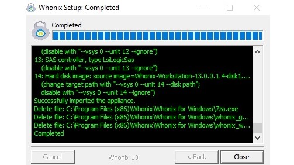

Hi everybody! Sorry for my english, i found a problem wiith the windows installer, like you see in the image after installing, the installer delete whonix_gateway.ova and delete whonix_workstation, then obviosly the virtualbox cannot find it. I hope you could understandme. Bye. Regards